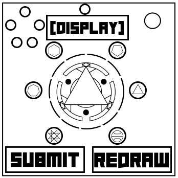

On the Subject of Not Alchemy
At some point, wizardry just becomes a game of comboing spells. With that being said, I cast Amen Break ⬇️⬇️↖️⬅️⬆️⬅️⬆️↙️↘️↗️.
You are an alchemest who needs to undo the amalgamation of whatever the hell your aprentice has made, and then show them how to correctly make their target creation.
On the module is/are...
- An emblem in the center of the module.
- 7 elemental buttons with symbols surrounding the center emblem.
- 5 control buttons near the top-left corner.
- An invert button near the top-middle.
- A submit button.
- A redraw button.
- A display near the top-middle.
To solve the module, you must...
- Determine what spells your apprentice has casted
- Cast spells to undo their mistakes*
- Correct their spells and cast them*
*You may need to redraw the circle of elements before, during, or after this step.
Determining your Aprentice's Spells
Clicking on one of the control buttons while in positive mode will cause a spell's name to scroll accross the display. If the scrolling text has one vowel changed from that spell, the primary and secondary elements of the spell are swapped. Clicking on a control button while in negative mode will scroll a position onto the display.
There is one accidental spell casted. To determine the accidental spell, order the spells by their positions. The accidental spell's primary element is the same as the previous spell's secondary element. The accidental spell's secondary element is the same as the next spell's primary element. This spell will never be the first or last spell.